Dark Optical Sectioning 使用帮助（一）开始使用主界面介绍第一步：选择输入输出路径第二步：设置基本参数第三步：运行算法完整流程演示（二）参数说明高级参数说明thresdividepadsizedegdephlisQuick基础参数说明backgroundpadfactoremwavelengthNApixelsizedenoise（三）使用批量处理功能入口第一步：获取参数文件第二步：选择路径第三步：运行算法（四）项目源码说明项目结构
软件启动后你会看到以下界面：
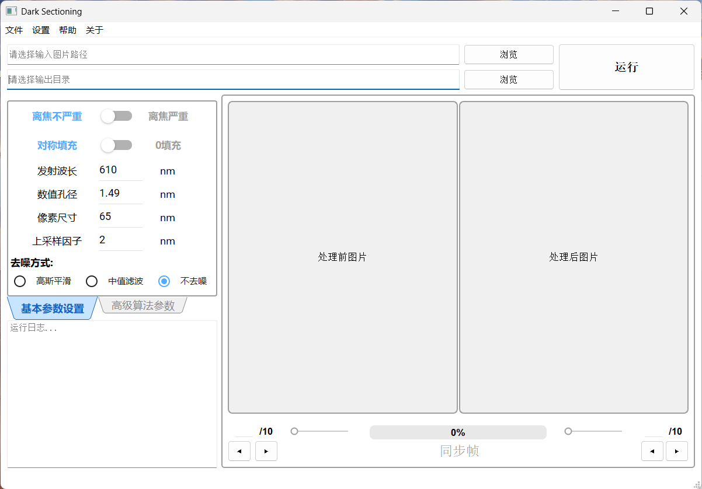
界面主要分为以下几个区域：
菜单栏区："文件"菜单聚合了图片另存为、导出/导入参数、批量处理功能入口；"设置"菜单提供清空输入、恢复默认参数快捷操作
路径与操作按钮区：左侧设置待处理图片输入路径和处理后图片输出路径，右侧为运行按钮
参数配置区：设置算法运行所需的各种参数
图像对比显示区：展示处理前后的图像对比
运行日志区：显示当前运行状态和进度信息
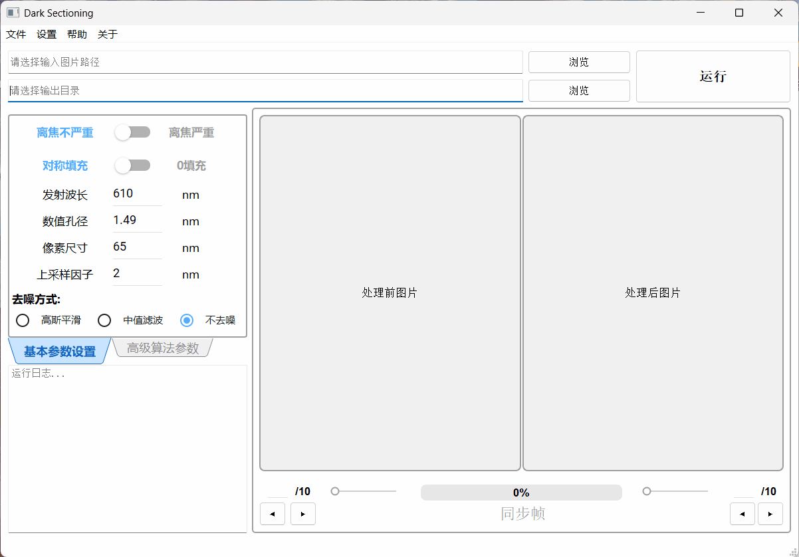
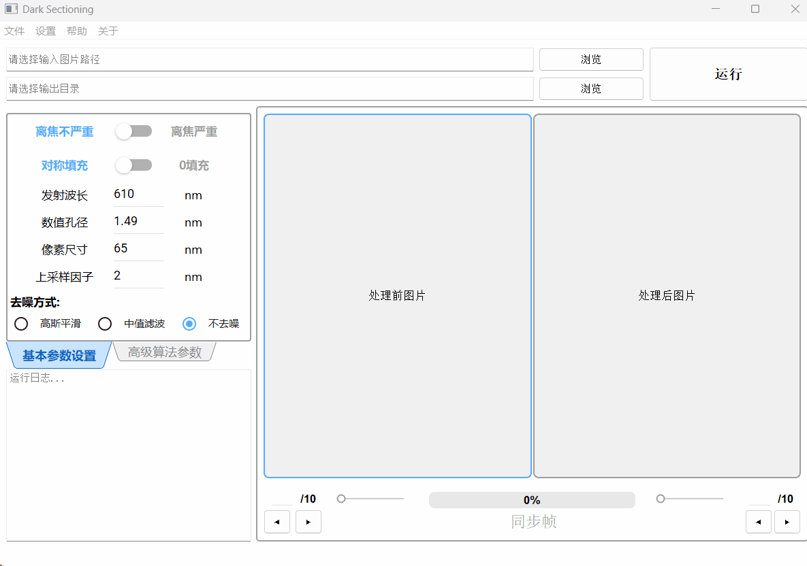
支持的图像格式包括：.png、.jpg、.jpeg、.tif、.tiff、.bmp
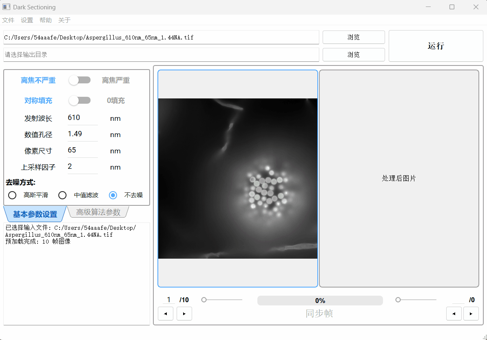
若不选择输出路径，程序将以桌面为默认输出路径
注意：输入输出路径均需要为全英文路径，软件无法处理含有中文字符的路径
在参数配置区 设置基本参数
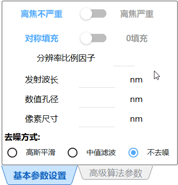
请根据您的荧光显微图像实际参数，填写基本参数设置 面板，若不填写，程序会以内置的默认参数处理图像，可能不适用于您的图片。
每个参数的意义如下:
离焦程度：选择"离焦严重"，程序将进行二次处理；选择"离焦不严重"，程序将不进行二次处理
填充方式：选择"对称填充"，程序将在预处理步骤的边缘填充中，使用对称填充方式；选择"0填充"，程序将在预处理步骤的边缘填充中，使用零填充方式
分辨率比例因子：调节算法对离焦信号的判定尺度，值越大去背景效果越强，推荐值为0-2
发射波长：荧光显微图像的荧光发射波长，单位为 nm
数值孔径：采集图像的显微镜的物镜数值孔径，单位为 nm
像素尺寸：显微镜单个像元对应的样品实际尺寸，单位为 nm
点击"运行"按钮，等待算法完成：
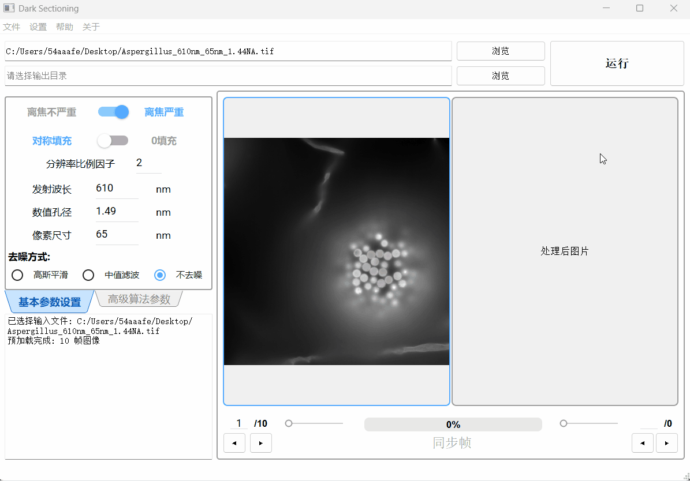
处理完成后，图像对比显示区右侧会显示处理后图像
图像栈将会以.tif格式保存在输出路径，文件名为原图像文件名加上后缀"_Darked"
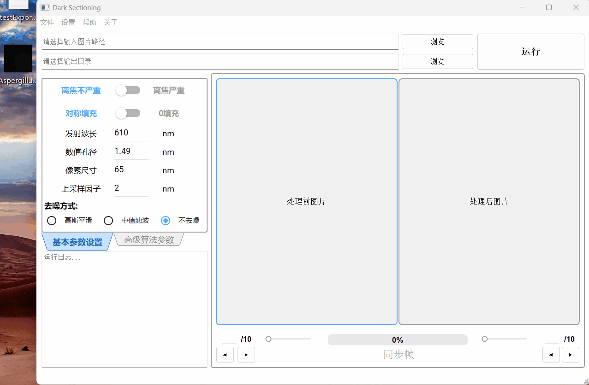
这些参数定义在项目\params目录下的paramsExpert.h内的结构体中，可通过参数配置区的"高级算法参数"面板设置数值
划分图像信号与背景的亮度阈值。默认值 70，建议取值范围20~150
在去雾处理中，低于 thres 的像素被视为背景区域，参与暗通道估计和大气光计算；高于 thres 的像素被视为信号区域，不参与。 荧光信号越强，此值应设置得越高 ，以避免将真实信号误判为背景。
相关代码位置： dehaze_fast2.cpp：L45-L50 ；
划分高频/低频分量的边界系数。默认值 0.5，推荐取值0.5。
控制高通滤波器和低通滤波器的截止频率宽度。 divide 越大，滤波器截止频率越宽。 基本不用调整 ，默认值 0.5 适用于大多数荧光显微图像。
相关代码与代码位置： separateHiLo.cpp：L45-L46
lp = lpgauss(Nx, Ny, sigmaLP * 2 * divide) ;
hp = hpgauss(Nx, Ny, sigmaLP * 2 * divide) ;
用于边缘渐变填充的尺寸参数。默认值 15，推荐取值范围15~40。
在预处理阶段，图像边缘需要填充以消除傅里叶变换的边界效应；填充行/列数 = floor(Nx / padsize) + 1 。 padsize 越大，填充量越小，边缘过渡越跳跃； padsize 越小，填充量越大，边缘过渡越平滑。处理完成后，图像会按相同尺寸裁剪回原始大小。
相关代码与代码位置：
darkSectioning.cpp：L257-L258 边缘填充：pad_rows = std::floor(Nx / pad_size) + 1
darkSectioning.cpp：L327-L328 边缘裁剪： crop_rows = std::floor(Nx / pad_size) + 1
darkSectioning.cpp：L389-L397 去噪后填充与裁剪
darkSectioning_cleanForBatch.cpp：L247-L248
darkSectioning_cleanForBatch.cpp：L289-L290
极低通滤波器（EL）的截止频率控制参数。为逗号分隔的多值字符串，默认值 "6,3"，推荐取值 "6,3"。
deg 被用于计算极低通/极高通滤波器：elp = lpgauss(Nx, Ny, sigmaLP / deg)。deg 越小 → 滤波器越宽 → EL 保留更多低频信息 → 大气光估计更平滑；deg 越大 → 滤波器越窄 → EL 保留更少低频 → 大气光估计更锐利。当离焦程度选择"离焦严重"时，两个值分别用于第 1 次和第 2 次处理；选择"离焦不严重"时只使用第一个值。
相关代码与代码位置： separateHiLo.cpp：L47-L48
elp = lpgauss(Nx, Ny, sigmaLP / deg) ;
ehp = hpgauss(Nx, Ny, sigmaLP / deg) ;
假设的场景深度系数，用于控制去雾强度。为逗号分隔的多值字符串，默认值 "3,3"，推荐取值 "3,3"。
在暗通道去雾阶段，大气光值被缩放：rep_atmosphere = dep * rep_atmosphere。dep 越大 → 大气光估计越高 → 去雾越激进 → 背景移除越强；dep 越小 → 去雾越保守。当离焦程度选择"离焦严重"时，两个值分别用于第 1 次和第 2 次处理；选择"离焦不严重"时只使用第一个值。
相关代码与代码位置：
dehaze_fast2.cpp：L78 rep_atmosphere_process = dep * rep_atmosphere_process；
高低频融合时的低频加权因子。为逗号分隔的多值字符串，默认值 "1,1"，推荐取值 "1,1"。
最终结果的融合公式为：result = Lo_process / hl + Hi。hl 越大 → Lo_process / hl 越小 → 低频分量贡献被压制 → 高频细节更突出（去背景更强）；hl 越小 → 低频分量保留更多 → 结果更接近原图。当离焦程度选择"离焦严重"时，两次处理共用同一个 hl第二个值；选择"离焦不严重"时，使用hl第一个值；（hl = hl_matrix[maxtime - 1]）。
相关代码与代码位置：
darkSectioning.cpp：L286 常规模式解析与取值：hl = hl_matrix[maxtime - 1]
darkSectioning.cpp：L311 常规模式调取使用：result = Lo_process / hl + Hi ;
darkSectioning_cleanForBatch.cpp：L270 批量处理模式解析与取值：hl = hl_matrix[maxtime - 1]
darkSectioning_cleanForBatch.cpp：L287 批量处理模式调取使用：result = Lo_process / hl + Hi ;
单帧处理模式开关。默认值 0（多帧处理模式），设置为 1 时启用单帧快速处理。
isQuick 控制算法读取图像栈的帧数：isQuick=1 时只读取并处理第一帧（Nz = 1），主要用于快速预览参数效果；isQuick=0 时读取并处理全部帧。该选项可通过参数配置区"高级算法参数"面板下方的"单帧处理"复选框勾选设置。
相关代码与代码位置：
paramsExpert.h：L24 参数定义：int isQuick = 0;
darkSectioning.cpp：L55 读取参数：int isQuick = paramsExpertSet.isQuick;
darkSectioning.cpp：L142 判断单帧模式：if (isQuick == 1) → Nz = 1（仅处理第一帧）
darkSectioning_cleanForBatch.cpp：L38 批量模式读取参数
darkSectioning_cleanForBatch.cpp：L82 批量模式读取缓存值
darkSectioning_cleanForBatch.h：L15 批量模式说明：固定全帧处理（isQuick 恒为 0）
这些参数定义在项目\params目录下的paramsBasic.h内的结构体中，可通过参数配置区的"基本参数设置"面板设置数值
即"离焦程度"，选择"离焦严重"，background=1，程序将进行二次处理；选择"离焦不严重"，background=0，程序将不进行二次处理
相关代码与代码位置：
darkSectioning.cpp：L48 读取参数：int background = paramsBasicSet.background;
darkSectioning.cpp：L62-L71 根据 background 值决定处理轮次 maxtime 和高级参数矩阵
darkSectioning_cleanForBatch.cpp：L75 批量模式读取参数：int background = m_background;
darkSectioning_cleanForBatch.cpp：L89-L98 批量模式根据 background 值决定处理轮次
即"填充方式"，选择"对称填充"，pad=1，程序将在预处理步骤的边缘填充中，使用对称填充方式；选择"0填充"，pad=0，程序将在预处理步骤的边缘填充中，使用零填充方式
相关代码与代码位置：
darkSectioning.cpp：L49 读取参数：int pad = paramsBasicSet.pad;
darkSectioning.cpp：L253 预处理边缘填充：if (pad == 1) → 对称填充，否则零填充
darkSectioning.cpp：L343 二次处理时重新填充边缘
darkSectioning.cpp：L382 去噪后填充边缘
darkSectioning_cleanForBatch.cpp：L76 批量模式读取参数
darkSectioning_cleanForBatch.cpp：L244 批量模式预处理边缘填充
darkSectioning_cleanForBatch.cpp：L311 批量模式二次处理时重新填充边缘
darkSectioning_cleanForBatch.cpp：L345 批量模式去噪后填充边缘
即"分辨率比例因子"，调节算法对离焦信号的判定尺度，值越大去背景效果越强，推荐值为0-2。factor 用于计算光学分辨率：res = 0.5 * emwavelength / NA / factor，factor 越大 → res 越小 → 截止频率越高 → 高低频分离保留更多高频细节
相关代码与代码位置：
separateHiLo.cpp：L34 读取参数：double factor = paramsBasicSet.factor;
separateHiLo.cpp：L38 计算分辨率：res = 0.5 * emwavelength / NA / factor;
confirm_block.cpp：L35 PSF 生成：PSF_Generator(paramsBasicSet.emwavelength, paramsBasicSet.pixelsize, paramsBasicSet.NA, paramsBasicSet.Nx, paramsBasicSet.factor);
即"发射波长"，荧光显微图像的荧光发射波长，单位为 nm。emwavelength 用于计算光学分辨率和点扩散函数（PSF）
相关代码与代码位置：
separateHiLo.cpp：L33 读取参数：double emwavelength = paramsBasicSet.emwavelength;
separateHiLo.cpp：L38 计算分辨率：res = 0.5 * emwavelength / NA / factor;
confirm_block.cpp：L35 PSF 生成：PSF_Generator(paramsBasicSet.emwavelength, paramsBasicSet.pixelsize, paramsBasicSet.NA, paramsBasicSet.Nx, paramsBasicSet.factor);
即"数值孔径"，采集图像的显微镜的物镜数值孔径，单位为 nm。NA 用于计算光学分辨率和点扩散函数（PSF）
相关代码与代码位置：
separateHiLo.cpp：L32 读取参数：double NA = paramsBasicSet.NA;
separateHiLo.cpp：L38 计算分辨率：res = 0.5 * emwavelength / NA / factor;
confirm_block.cpp：L35 PSF 生成：PSF_Generator(paramsBasicSet.emwavelength, paramsBasicSet.pixelsize, paramsBasicSet.NA, paramsBasicSet.Nx, paramsBasicSet.factor);
即"像素尺寸"，显微镜单个像元对应的样品实际尺寸，单位为 nm。pixelsize 用于计算物镜截止频率：k_m = Ny / (res / pixel_size)
相关代码与代码位置：
separateHiLo.cpp：L35 读取参数：double pixel_size = paramsBasicSet.pixelsize;
separateHiLo.cpp：L39 计算截止频率：k_m = Ny / (res / pixel_size);
confirm_block.cpp：L35 PSF 生成：PSF_Generator(paramsBasicSet.emwavelength, paramsBasicSet.pixelsize, paramsBasicSet.NA, paramsBasicSet.Nx, paramsBasicSet.factor);
即"去噪方式"，选择"不去噪"，denoise=0，程序不进行后处理去噪；选择"高斯平滑"，denoise=1，程序对结果图像执行高斯滤波去噪；选择"中值滤波"，denoise=2，程序对结果图像执行 MDBUTMF 改进中值滤波（支持16位深）
相关代码与代码位置：
darkSectioning.cpp：L50 读取参数：int denoise = paramsBasicSet.denoise;
darkSectioning.cpp：L376 不去噪分支：if (denoise == 0) → 直接使用原始结果
darkSectioning.cpp：L379 高斯平滑分支：else if(denoise == 1) → 填充→高斯模糊→裁剪
darkSectioning.cpp：L402 中值滤波分支：else if(denoise == 2) → 预备使用 MDBUTMF 改进中值滤波
darkSectioning.cpp：L446-L452 中值滤波执行：if (denoise == 2) → final_image = applyMDBUTMF(final_image);
darkSectioning_cleanForBatch.cpp：L77 批量模式读取参数
darkSectioning_cleanForBatch.cpp：L339 批量模式不去噪分支
darkSectioning_cleanForBatch.cpp：L342 批量模式高斯平滑分支
darkSectioning_cleanForBatch.cpp：L365 批量模式中值滤波分支
darkSectioning_cleanForBatch.cpp：L421-L427 批量模式中值滤波执行：if (denoise == 2) → final_image = applyMDBUTMF(final_image);
功能介绍：针对同批次大量样本可使用相同参数的场景，您可以使用批量处理功能。在您指定输入目录、输出目录、参数配置文件并点击运行后，软件会自动遍历输入目录，记录该文件夹下的所有图像，之后循环调用算法逐一处理所有图像，实时输出进度日志。循环处理中内置中文路径检测和文件级容错机制， 确保单张失败不影响整体任务。
"批量处理"功能的入口在菜单栏的"文件"菜单末行
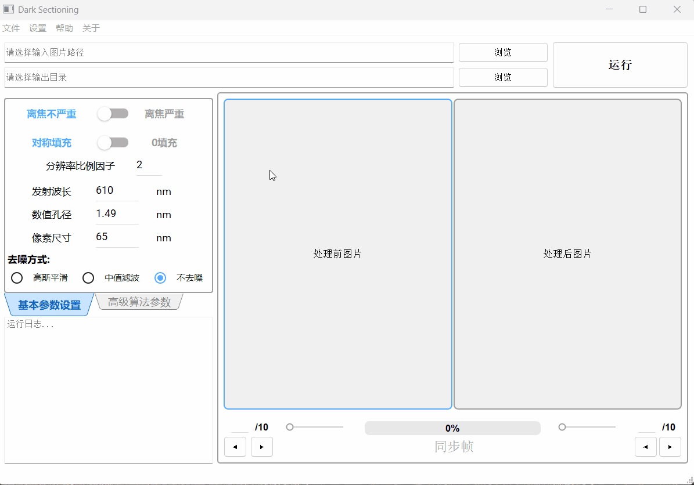
算法运行一次后，使用菜单栏的"文件"菜单下的 "导出算法所用参数"功能，导出参数文件
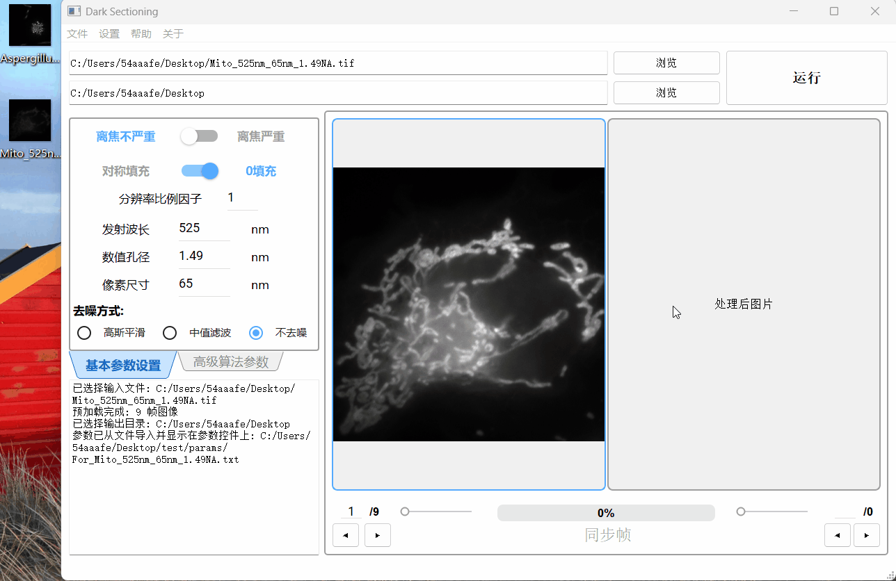
建议使用"单帧处理"功能寻找同批次图像的最佳参数
注意： "导出算法所用参数"功能导出的是算法内部储存的参数值，而非主界面上参数设置面板显示的值。只有在点击"运行"后，参数设置面板上显示的值才会导入算法内部。若您未进行初次运行就导出参数，导出的将是内置的默认初始参数。
先将您需要处理的所有图像放在同一个文件夹下，之后在批量处理窗口选择输入目录、输出目录、参数文件的路径
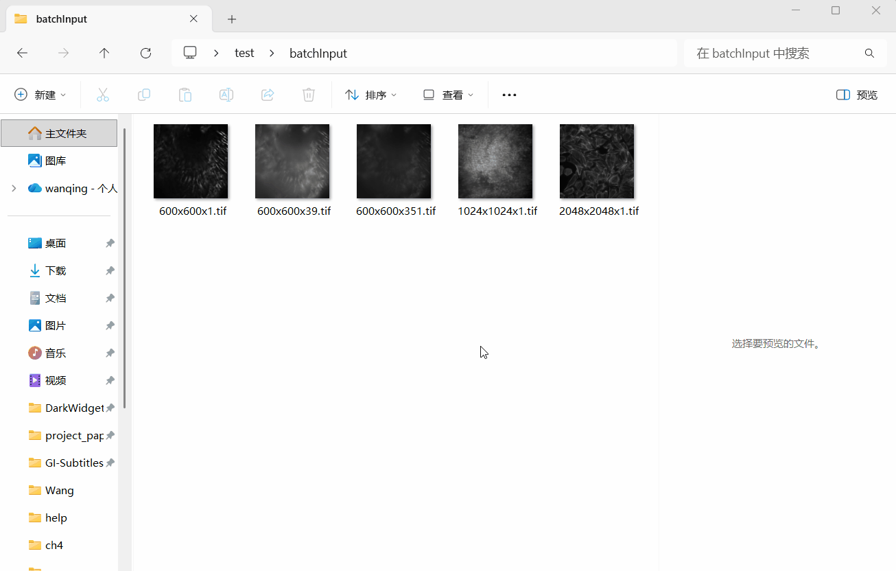
注意：所有路径均需要为全英文路径，软件无法处理含有中文字符的路径
点击运行，软件将逐一处理所有图像，实时输出进度日志，所有处理后图像都将以.tif格式保存在输出目录下，所有文件名均为原图像文件名加上后缀"_Darked"
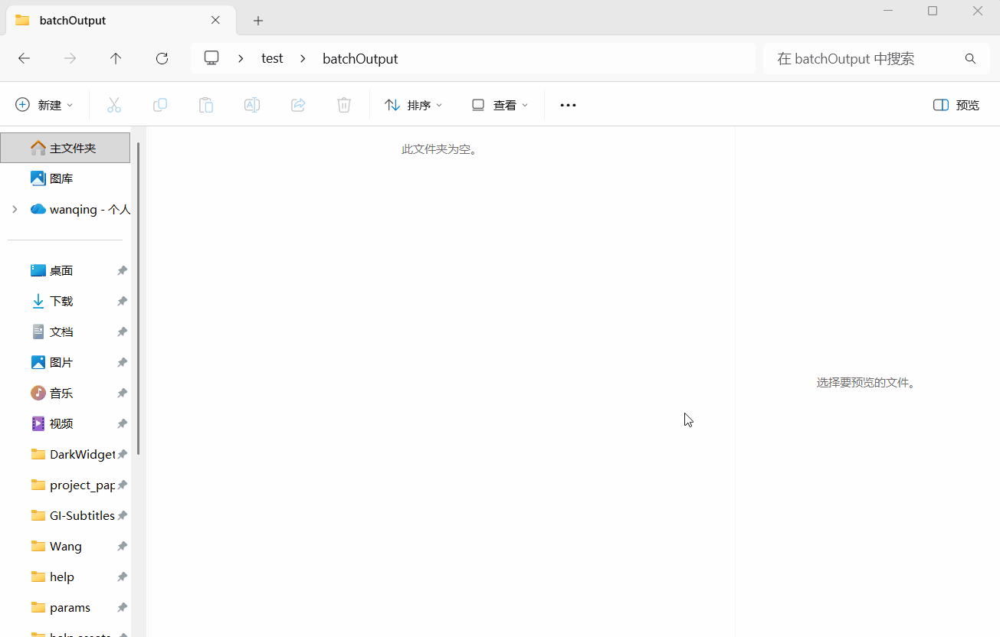
本项目是基于 Dark-sectioning 项目的 MATLAB 代码，使用 C++/Qt 进行的移植与重构，并添加了图形用户界面。
技术栈： OpenCV 4.10.0、Qt 5.14.2（MinGW 64-bit）、Qt Creator 4.11.1、Qt Widgets Application（基类 QMainWindow）、qmake（.pro）、MinGW 7.3.0 64-bit C++编译器
源项目论文： Dark-based optical sectioning assists background removal in fluorescence microscopy
Dark_WidgetsMaterial_V1_0_0/├── main.cpp // 程序入口├── Dark_WidgetsMaterial_V1_0_0.pro // qmake 工程文件│├── algorithm/ // 算法层：核心图像处理算法│ ├── darkSectioning.cpp/h // 单帧处理主流程│ ├── darkSectioning_cleanForBatch.cpp/h // 批量处理主流程（继承 darkSectioning）│ ├── separateHiLo.cpp // 高低频分离│ ├── dehaze_fast2.cpp // 暗通道去雾│ ├── confirm_block.cpp // 腐蚀核尺寸确定│ ├── PSF_Generator.cpp // 点扩散函数（PSF）生成│ ├── get_dark_channel.cpp // 暗通道计算│ ├── get_atmosphere.cpp // 大气光估计│ ├── get_transmission_estimate.cpp // 透射率初始估计│ ├── get_radiance.cpp // 辐照度恢复│ ├── get_laplacian.cpp // 拉普拉斯滤波器│ ├── guided_filter.cpp // 引导滤波│ ├── window_sum_filter.cpp // 窗口求和滤波│ └── port_matlab2opencv.cpp/h // MATLAB→OpenCV 移植辅助函数│├── ui/ // 界面层：Qt 界面控件与交互逻辑│ ├── mainwindow.cpp/h/ui // 主窗口（菜单栏、路径选择、参数面板、图像显示、日志）│ ├── orangewidget.cpp/h/ui // 橙区控件（图像对比显示区）│ ├── orangebar.cpp/h/ui // 进度条控件│ ├── greenwidget.cpp/h/ui // 绿区控件（参数配置区，含基本参数和高级参数两页）│ ├── batchdialog.cpp/h/ui // 批量处理对话框│ └── aboutdialog.cpp/h // 关于对话框│├── params/ // 参数传递头文件│ ├── paramsBasic.h // 基本参数结构体│ └── paramsExpert.h // 高级参数结构体与将字符串解析为vector的辅助函数│├── verify/ // 调试辅助工具（仅调试用，正式构建不参与）│ └── ViewMat.cpp/h // 将OpenCV::Mat输出为.csv文件│├── help/ // 帮助文档│ ├── help.md // Markdown 源文件│ ├── help.html // Typora 导出的 HTML 渲染文件│ └── help.assets/ // 帮助文档使用的图片和 GIF 动图│└── SDK/Material/ // 第三方控件库：qt-material-widgets├── components/ // 控件源码与头文件（按钮、滑块、文本框等Material组件）│ ├── icons/ // Material Design 图标资源（SVG）│ ├── lib/ // 库内部实现（主题、样式、涟漪效果等）│ └── layouts/ // 布局辅助组件├── staticlib/ // 预编译静态库（libcomponents.a）└── fonts/ // Roboto 字体文件（Material Design 标准字体）